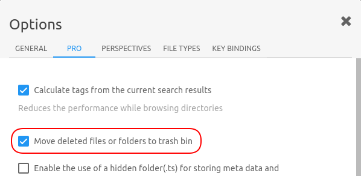

TagSpaces PRO
Introduction
TODO
Community vs PRO comparison
TODO (take if from the website)
Features
TODO add links to the main PRO features described in this documentation
- Sidecar file tagging
- Signed installers
- Advanced search
proGenerating persistent thumbnails BETA
In perspectives supporting showing of file previews like Grid and ImageSwiper, TagSpaces PRO is generating thumbnails for the visible files in the perspective. Currently the application tries to generated thumbnails for the following files types:
- Images: PNG, JPG, BMP, GIF, SVG, WEBP
- Videos: WEBM, OGV, MP4, M4V
- Notes: HTML
- Audios formats: MP3 (with embedded thumbnail)
- Ebooks: EPUB (with integrated cover image)
- Archives: ZIP (it just takes an image found in the archive)
- Office Documents: PDF, ODT, ODP, ODS, DOCX, XLSX, PPTX
In comparison to the community edition which generates thumbnails (only for PNGs and JPGs) on every opening of a folder, the PRO version persists the generated thumbnails in the .ts folder located in every folder you browse with it. This feature significantly accelerates the browsing of folders containing many files. The thumbnail generation can be activated in the PRO tab of the application settings.

Here is a short video showing the thumbnail generation in action.
proDeleting files to trashcan
In the setting of TagSpaces you can activate a checkbox "Move deleted files or folders to trash bin". Aftet activating it, all files deleted in TagSpaces will be send to the Trash, Trashbin or Recylce bin depending on your operating system. From these locations, you files can be easily recovered in case of a unintended deletion.

proAdding folders meta information
TagSpaces PRO gives you the ability to add tags and a description to every folder connected to it. These information is managed in the folder properties dialog, which can be accessed as shown in the following screenshots.


Technically TagSpaces PRO created a sidecar file called tsm.json in the hidden .ts folder of every folder. This file contains the folder tags and description.
~ location folder (with your files)
├── subfolder
│ ├── .ts
│ │ └── tsm.json
│ ├── file1.jpg
│ └── file2.pdf
├── .ts
│ └── tsm.json
├── file3.png
└── file4.docx
Pro settings